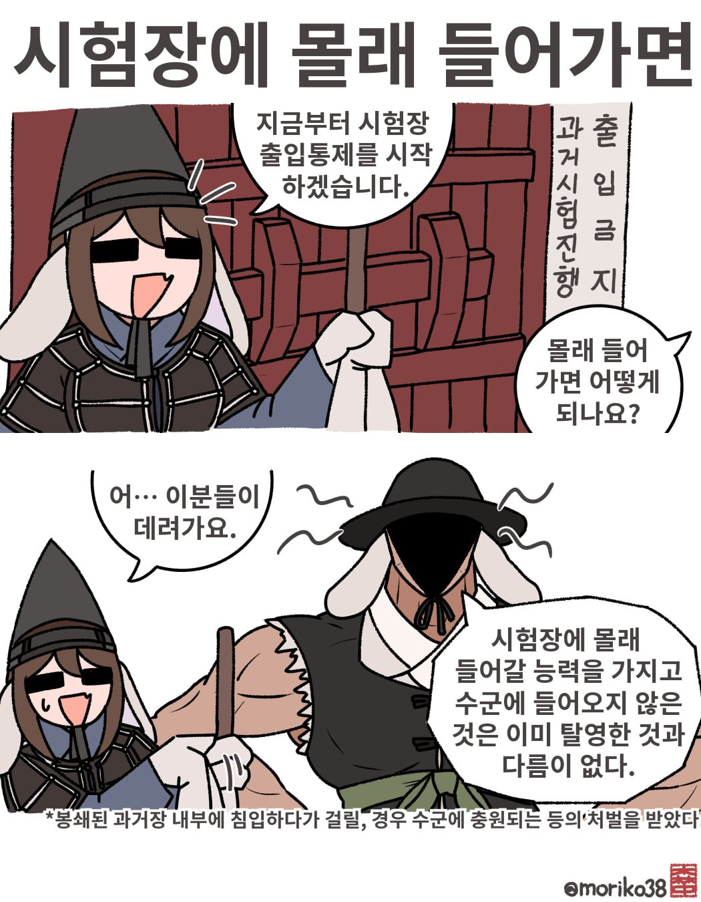
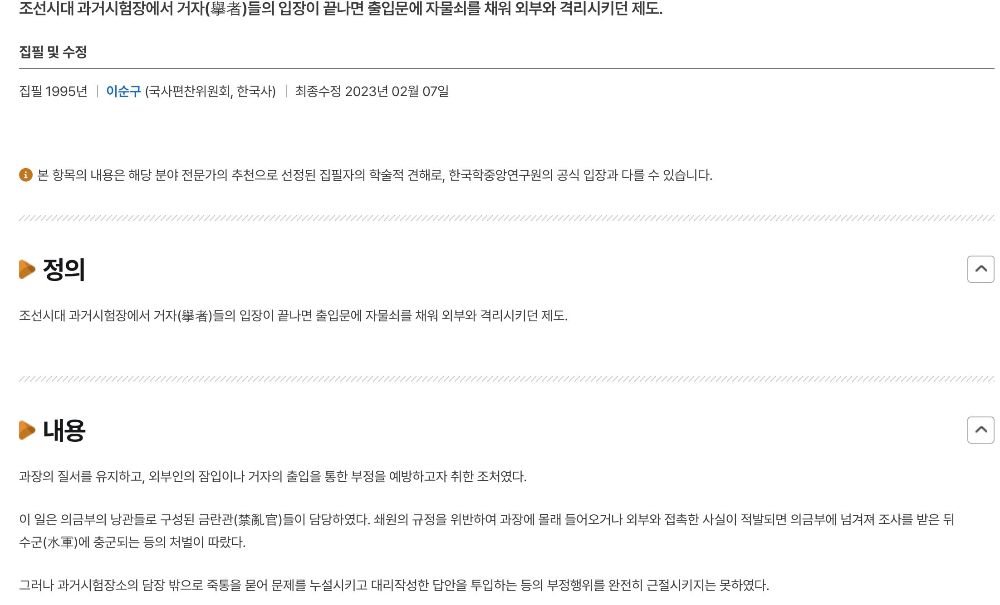
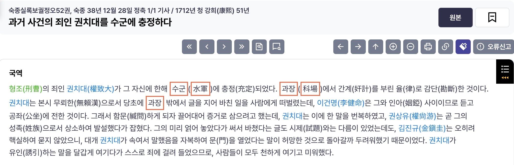

형조의 죄인 권치대가 그 자신에 한해 수군에 충정되었다. 과장에서 간계를 부린 율로 감단한 것이다.
-숙종38년 12월 28일



형조의 죄인 권치대가 그 자신에 한해 수군에 충정되었다. 과장에서 간계를 부린 율로 감단한 것이다.
-숙종38년 12월 28일
가장 현실적인 처벌법이었네 ㅋㅋㅋㅋㅋㅋ
자진입대 ㅋㅋㅋ
ㅋㅋㅋㅋㅋㅋ
'噸噸丁'
기합!
수군에 자진 입대한 것을 환영한다 아쎄이
아쎄이!
토근출 ㄷㄷ
ㅋㅋㅋㅋㅋㅋㅋㅋㅋㅋㅋㅋㅋㅋ해병대는 열려있다
ㅋㅋㅋ
원조 해병 ㅋㅋ
새끼..기합!
새끼 기선!
ㅋㅋㅋㅋㅋㅋㅋㅋㅋㅋ
새끼…. 자진입대를 환영한다 아쌔이
수군으로 강제전직 ㄷㄷ
No!! Stop!!
(감사합니다!! 영광입니다!!)
하필 또 수군이네ㅋㅋㅋㅋ
저 시절은 수군 군역 이 사실상 형벌이었기 때문에... 육지에 비해 죽을 확률이 높아
"해병대에 적합한 몸을 하고도 해병대에 입대하지 않았다니, 이는 중대한 탈영 행위이나 자진입대를 통해 그 흘러빠진 탈영 행위를 응징하는 것으로 용서해주겠다!"
"안돼! 살려주세요!"
"뭐? 안... 돼? 살려줘...? 번역기 해병! 이 아쎄이가 뭐라는지 번역해라!"
"뽀르삡뽑... 삡! 악! 이 아쎄이는 지금 얼른 해병대에 입대하고 싶으니 옷을 찢어버리고 각개빤스로 재무장 시켜달라고 말하고 있습니다!"
새애끼.....기합!!!!
법도를 모르는구나 악!
아앗쎄이!
조선근출 ㅋㅋㅌㅌㅌ
원조해병비문학
칠반천역
새애애끼 기합!
부정시험 적발되면 바로 해병대가는 시스템 다시 도입하자.
악!